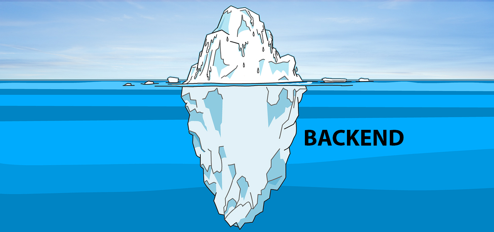
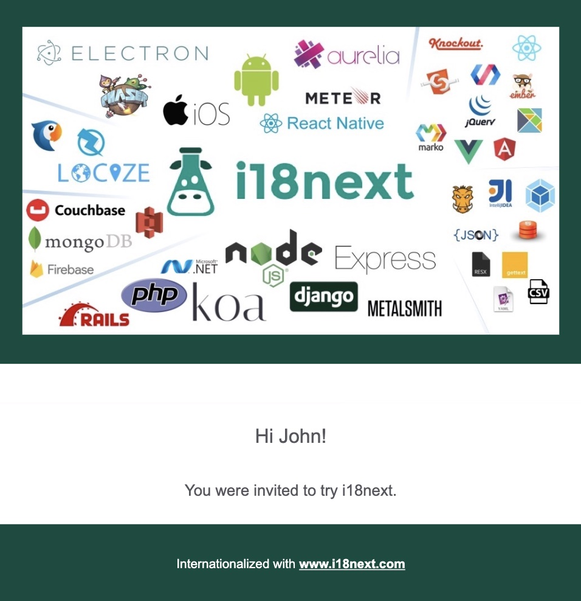
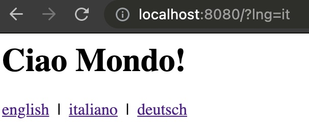

Möglicherweise wissen Sie bereits, wie Sie eine clientseitige Anwendung ordnungsgemäss internationalisieren, wie in diesem React-basierten Tutorial, diesem Angular-basierten Tutorial oder dieses Vue-basierte Tutorial.
In diesem Blogbeitrag beleuchten wir die Serverseite.
Warum muss ich i18n im Backend meiner Anwendung behandeln?
Denken Sie an alle benutzerseitigen Inhalte, die nicht direkt in Ihrem Browser gerendert werden ...
- Zum Beispiel bauen Sie eine Befehlszeilenschnittstelle (CLI)?
- Sie senden E-Mails?
- Oder verwenden Sie serverseitiges Rendering (SSR)?
- etc.
Lassen Sie uns das überprüfen ...
Wir zeigen einige Beispiele, die i18next als i18n-Framework verwenden. Wenn Sie wissen möchten, warum wir i18next vorschlagen, werfen Sie einen Blick auf diese Seite.
Befehlszeilenschnittstelle (CLI)
Beginnen wir mit etwas Einfachem: einer sehr kleinen CLI-App. Für dieses Beispiel verwenden wir commander, ursprünglich erstellt von TJ Holowaychuk.
Wir definieren einen sayhi-Befehl mit optionalen Sprach- und Namensparametern, der mit einer Anrede in der entsprechenden Sprache antworten sollte.
1 |
|
Ok, jetzt erstellen wir eine neue i18n.js-Datei und richten i18next entsprechend ein:
1 | const i18next = require('i18next') |
Und auch unsere Übersetzungsressourcen:
1 | // locales/en/translations.json |
Jetzt können wir den i18n.js-Export so verwenden:
1 |
|
Ok, was ist das Ergebnis?
1 | ## if we execute the cli command without any parameters... |
Einfach, nicht wahr?
Wenn Sie Ihre CLI-App nicht in einer einzigen ausführbaren Datei bündeln, beispielsweise durch Verwendung von pkg, können Sie auch z. B. das i18next-fs-backend, um Ihre Übersetzungen dynamisch zu laden, zum Beispiel so:
1 | const i18next = require('i18next') |
🧑💻 Ein Codebeispiel finden Sie hier.
Ein möglicher nächster Schritt...
Ein möglicher nächster Schritt könnte die Professionalisierung des Übersetzungsmanagements sein. Das bedeutet, dass die Übersetzungen in einem Übersetzungsmanagementsystem (TMS) wie locize „verwaltet“ (neue Sprachen hinzufügen, neue Übersetzungen usw.) und mit Ihrem Code synchronisiert werden. Sehen Sie sich Schritt 1 in diesem Tutorial an, um zu sehen, wie das aussehen könnte.
E-Mails generieren
Ein weiterer typischer serverseitiger Anwendungsfall, der eine Internationalisierung erfordert, ist die Generierung von E-Mails.
Um dieses Ziel zu erreichen, müssen Sie normalerweise einige Rohdaten in HTML-Inhalte (oder Text) umwandeln, die in der bevorzugten Sprache des Benutzers angezeigt werden.
In diesem Beispiel verwenden wir pug (früher bekannt als „Jade“ und ebenfalls ursprünglich erstellt von TJ Holowaychuk), um einige zu definieren Vorlagen, die mit den in der E-Mail benötigten Daten gefüllt werden sollen, und mjml, um den E-Mail-Inhalt tatsächlich zu gestalten.
Lassen Sie uns eine neue mail.js-Datei erstellen, die wir verwenden können, um dies zu erreichen.
1 | import pug from 'pug' |
Die mailTemplate.pug könnte so aussehen:
1 | mjml |
Lassen Sie uns nun einige Übersetzungen definieren...
1 | // locales/en/translations.json |
...und verwenden Sie sie in einer i18n.js-Datei:
1 | import { dirname, join } from 'path' |
Schliesslich können alle oben genannten Elemente wie folgt verwendet werden:
1 | import mail from './mail.js' |
So könnte das resultierende HTML aussehen:

🧑💻 Ein Codebeispiel finden Sie hier.
Serverseitiges Rendern (SSR)
Wir werden 2 verschiedene SSR-Beispiele ausprobieren, ein klassisches mit Fastify with pug und ein trendigeres mit Next.js.
Fastify mit Pug-Beispiel
Für dieses Beispiel verwenden wir mein bevorzugtes http-Framework Fastify (erstellt von Matteo Collina und Tomas Della Vedova), aber jedes andere Framework funktioniert auch.
Dieses Mal verwenden wir ein anderes i18next-Modul, i18next-http-middleware. Es kann für alle Node.js-Webframeworks verwendet werden, wie express oder Fastify, aber auch für Deno Web-Frameworks wie abc oder ServestJS.
Wie bereits gesagt, verwenden wir hier Fastify, mein Favorit 😉.
Beginnen wir wieder mit der Datei i18n.js:
1 | import { dirname, join } from 'path' |
Und unsere Übersetzungsressourcen...
1 | // locales/en/translations.json |
Eine einfache pug-Vorlage:
1 | html |
Unsere "Haupt"-Datei app.js:
1 | import fastify from 'fastify' |
Starten Sie nun die App und prüfen Sie, welche Sprache Sie sehen... 
Wenn Sie die Konsolenausgabe überprüfen, sehen Sie auch Folgendes:
1 | node app.js |
Ja, wenn Sie möchten, können Sie Ihre Protokollauszüge auch internationalisieren 😁
🧑💻 Ein Codebeispiel finden Sie hier.
Ein möglicher nächster Schritt...
Möchten Sie Ihre Übersetzungen in einem Übersetzungsmanagementsystem (TMS) wie locize verwalten?
Verwenden Sie einfach dieses CLI, um die Übersetzungen mit Ihrem Code zu synchronisieren. Um zu sehen, wie das aussehen könnte, sehen Sie sich Schritt 1 in diesem Tutorial an.
Verwenden Sie alternativ i18next-locize-backend anstelle von i18next-fs-backend. Wenn Sie Ihren Code in einer serverlosen Umgebung ausführen, stellen Sie sicher, dass Sie diesen Rat zuerst lesen!
Übrigens: Wussten Sie, dass Sie Ihre Fastify-App ganz einfach für die Verwendung in AWS Lambda UND lokal anpassen können?
Dies kann mit Hilfe von aws-lambda-fastify erreicht werden.
Erstellen Sie einfach eine neue lambda.js, die Ihre modifizierte app.js-Datei importiert:
1 | // lambda.js |
Stellen Sie sicher, dass Ihre Fastify-App exportiert wird ... (export default app)
Und beginnen Sie nur, auf einem Port zu lauschen, wenn er nicht in AWS Lambda ausgeführt wird (import.meta.url === 'file://${process.argv[1]}' oder require.main === module für CommonJS)
1 | // app.js |
😎 Cool, oder?
Next.js-Beispiel
Jetzt ist es Zeit für Next.js...
Wenn es um die Internationalisierung von Next.js-Apps geht, ist next-i18next eine der beliebtesten Optionen. Es basiert auf react-i18next und Benutzer von next-i18next müssen standardmässig einfach ihre Übersetzungsinhalte als JSON-Dateien und müssen sich um nichts weiter kümmern.
Hier finden Sie ein einfaches Beispiel.
Sie benötigen lediglich eine next-i18next.config.js-Datei, die die Konfiguration für next-i18next bereitstellt und Ihre App mit der appWithTranslation-Funktion umschliesst, die es ermöglicht, die t (translate)-Funktion in Ihren Komponenten zu verwenden über Haken.
1 | // _app.js |
1 | // index.js |
Standardmässig erwartet next-i18next, dass Ihre Übersetzungen wie folgt organisiert sind:
1 | . |
A demo of how such an app looks like when it is deployed, can be found here.
Das sieht wirklich einfach aus, oder?
Verwalten Sie die Übersetzungen ausserhalb des Codes
Um die Übersetzungen optimal zu verwalten, gibt es drei verschiedene Ansätze:
MÖGLICHKEIT 1: Live-Übersetzung herunterladen
Wenn Sie locize verwenden, können Sie Ihr next-i18next-Projekt so konfigurieren, dass die Übersetzungen aus dem CDN (auf Server- und Clientseite).
Eine solche Konfiguration könnte wie folgt aussehen:
1 | // next-i18next.config.js |
Hier finden Sie weitere Informationen und ein Beispiel, wie dies aussieht.
Dank i18next-chained-backend besteht auch die Möglichkeit, die Übersetzungen lokal zwischenzuspeichern. Hier finden Sie weitere Informationen zu dieser Option.
Wenn Sie Ihre Next.js-App in einer serverlosen Umgebung bereitstellen, sollten Sie die zweite Möglichkeit in Betracht ziehen ... Weitere Informationen zu den Gründen dafür finden Sie hier.
MÖGLICHKEIT 2: Übersetzungen bündeln und synchron halten
Wenn Sie sich nicht sicher sind, wählen Sie diesen Weg.
Diese Option ändert nicht die Konfiguration Ihres "normalen" next-i18next-Projekts:
1 | // next-i18next.config.js |
Laden Sie einfach Ihre lokalen Übersetzungen herunter oder synchronisieren Sie sie, bevor Sie Ihre App „bereitstellen“.
Hier finden Sie weitere Informationen und ein Beispiel dafür, wie dies aussieht.
Sie können beispielsweise ein npm-Skript (oder ähnliches) ausführen, das die cli , um die Übersetzungen von locize in den entsprechenden Ordner herunterzuladen, in dem next-i18next nachschaut (z. B. ./public/locales). Auf diese Weise werden die Übersetzungen in Ihrer App gebündelt und Sie generieren während der Laufzeit keine CDN-Downloads.
i.e. locize download --project-id=d3b405cf-2532-46ae-adb8-99e88d876733 --ver=latest --clean=true --path=./public/locales
Bester Ansatz: optimiert für Server- und Clientseite
Hier finden Sie einen Blogbeitrag zur optimalen Verwendung von next-i18next mit clientseitigem Übersetzungsdownload und SEO-Optimierung.
Es gibt auch ein i18next Crashkurs-Video.
🎉🥳 Fazit 🎊🎁
Wie Sie sehen, ist i18n auch serverseitig wichtig.
Ich hoffe, Sie haben ein paar neue Dinge über serverseitige Internationalisierung und moderne Lokalisierungsworkflows gelernt.
Wenn Sie also Ihr i18n-Thema auf die nächste Ebene bringen möchten, lohnt es sich, i18next und auch locize auszuprobieren.
👍